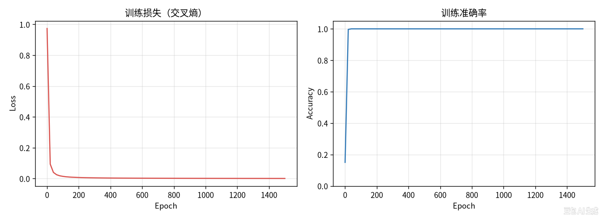
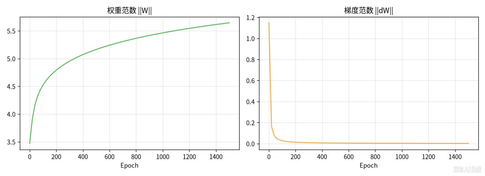
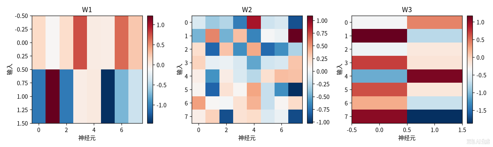
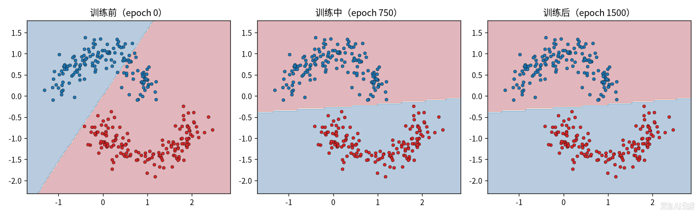

基于 NumPy 从零实现的多层感知机（前向传播 · 反向传播 · 梯度下降），本页展示训练过程中的损失、准确率、权重/梯度范数、权重矩阵热图与决策边界演变。
横轴为训练轮次（epoch）；曲线取自训练脚本导出的 history 记录。
热图按层展示最终权重矩阵：蓝色为负权重、红色为正权重、白色接近零；单元格内标注数值。下方对比第一层权重在训练前 / 中 / 后的快照。
底色为模型对网格区域的预测类别，散点为训练样本；对比训练前、训练中、训练后三个阶段的分类区域。
以下图片由训练脚本用 matplotlib 生成，保存在 assets/ 目录；上方交互图表与这些静态图数据一致。




对第 l 层，先计算线性加权和，再经过激活函数得到本层输出：
二分类（或多分类）交叉熵衡量预测概率分布与真实标签的差异：
训练目标即最小化该损失；损失曲线随 epoch 下降说明模型在拟合训练数据。
从输出层反向逐层传递误差，先求本层误差项 δ，再回传给前一层：
沿梯度反方向按学习率 η 更新所有权重与偏置：
反复迭代前向计算、反向求导与参数更新，直到损失收敛。